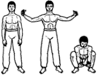

<- back
Next up: Дракон оборачивается назад
Журавль перед взлетом

Исходное положение: Стоим, ноги на ширине плеч, руки свободно опущены. На вдохе разводим руки в стороны, слегка согнув в локтях, кисти согнуты внутрь, ладони повернуты друг к другу, пальцы расставлены.
На выдохе приседаем на полной стопе и одновременно опускаем руки вперед и вниз, при этом кисти отогнуты назад, ладони раскрыты вперед, пальцы направлены вверх. На вдохе встаем и одновременно разводим в стороны руки, как описано выше. Повторяем упражнение 7 раз, концентрируя внимание на дыхании, представляя, что в груди как бы чередуется расширение и сжатие шара. Вставая, стремимся представить, что поднимаем себя кистями.
Next up: Дракон оборачивается назад